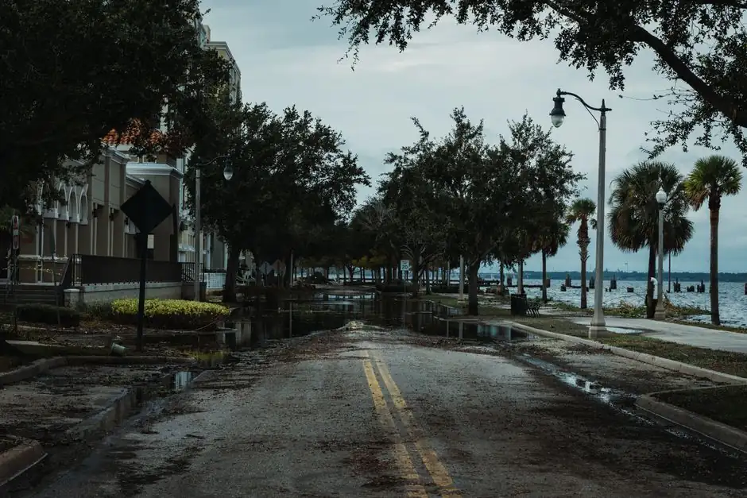
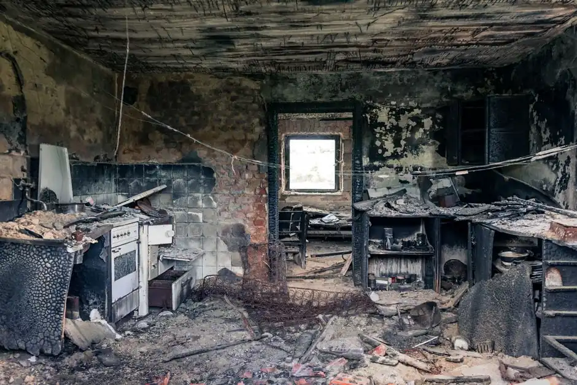
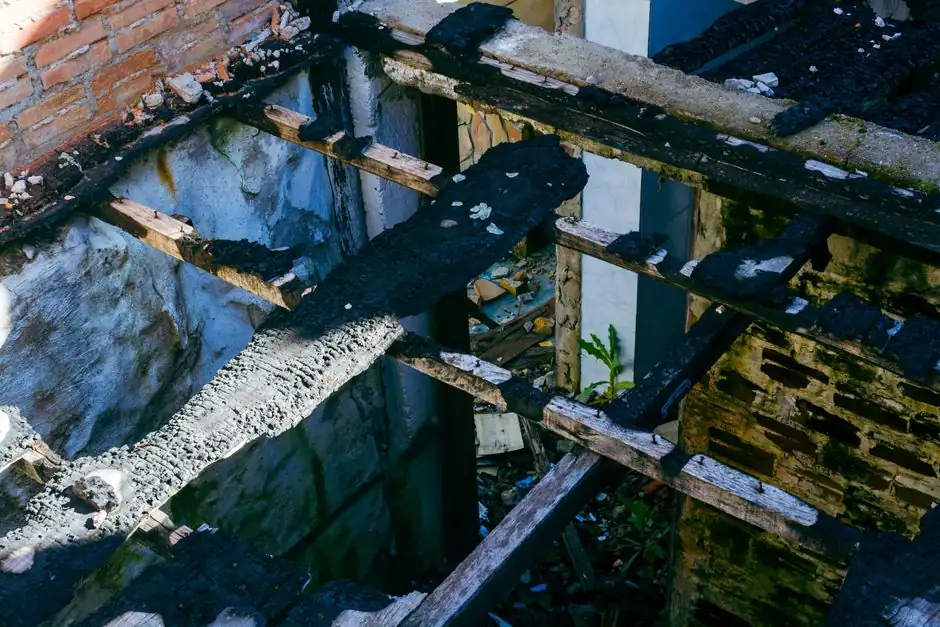
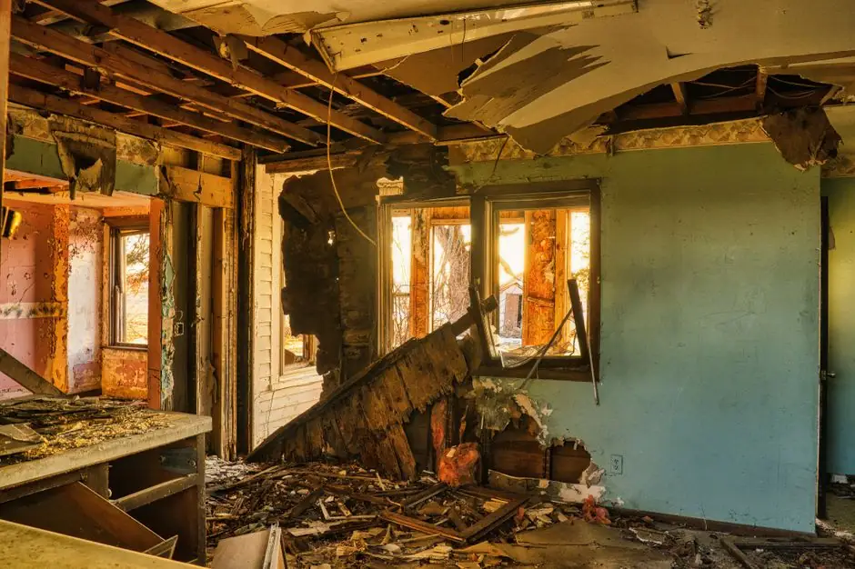

Water Extraction
We utilize powerful water extraction pumps to remove standing water quickly and efficiently, preventing further damage.
Flood Damage Restoration in Tampa, FL is critical for property owners dealing with storm surges, flash floods, or plumbing backups. Our rapid response team delivers proven solutions Tampa residents and businesses rely on 24/7.
Flood Damage Restoration in Tampa, FL is a specialized service that addresses the aftermath of coastal flooding, heavy rains, and plumbing failures. This process involves industrial water extraction, dehumidification, antimicrobial sanitization, and structural repairs.
Local Tampa homeowners often face flooding due to severe weather, high tides, and tropical storms. Ignoring floodwater leads to black mold growth and structural compromise within 24 to 48 hours in Florida's warm climate, highlighting the need for prompt action from our Tampa team.
Our Flood Damage Restoration services cover a comprehensive range of tasks to ensure your home is fully restored. This includes water extraction, drying, cleaning, and necessary repairs.
We utilize powerful water extraction pumps to remove standing water quickly and efficiently, preventing further damage.
Advanced drying techniques, including dehumidifiers, are employed to remove excess moisture from affected areas.
All surfaces are cleaned and sanitized to eliminate bacteria and prevent mold growth, ensuring a safe environment.
We provide necessary repairs to drywall, flooring, and insulation to restore your home to its pre-flood condition.
Our team conducts a thorough assessment of the damage, identifying affected areas and the extent of water intrusion. This step typically takes 1-2 hours.
Using advanced water extraction pumps, we remove standing water from your property. This crucial step can take 2-4 hours, depending on the volume of water.
We deploy industrial dehumidifiers and moisture meters to ensure all areas are thoroughly dried. This process can last from 24-48 hours.
All affected surfaces, including drywall and flooring, are cleaned and sanitized to prevent mold and bacteria growth. This step is essential for health and safety.
Our team repairs any damage to structures, including replacing drywall and insulation. This final step varies in time based on the extent of repairs needed.

Our team conducts a thorough assessment of the damage, identifying affected areas and the extent of water intrusion. This step typically takes 1-2 hours.
Used to detect moisture levels in walls and flooring, ensuring thorough drying.
Quickly removes standing water from affected areas, minimizing damage.
Reduces humidity levels, preventing mold growth and accelerating the drying process.
Identifies hidden moisture behind walls and under floors, ensuring no area is overlooked.

A homeowner experienced a flooded ground level after heavy rainfall, with water standing for hours.
After: After our restoration, the property was completely dry within 48 hours, with no mold growth detected.
Book this service →
A burst pipe flooded the kitchen, damaging cabinets and flooring.
After: We restored the kitchen within three days, replacing damaged materials and ensuring a safe environment.
Book this service →
A sewage backup contaminated the lower level, posing serious health risks.
After: Our team safely cleaned and sanitized the area, restoring safety within 24 hours.
Book this service →Flood Damage Restoration addresses critical issues that arise from water intrusion, helping homeowners avoid severe consequences.
Ask a pro →Our restoration services include thorough drying and sanitizing to prevent mold growth and ensure a healthy living environment.
We assess and repair any structural damage, restoring the integrity of your home and preventing future issues.
Our team quickly identifies and addresses leaks, mitigating damage and protecting your investment.
$180 - $450 depending on scope
Flood Damage Restoration costs in Tampa typically range from $180 to $450, depending on the severity of the damage and the services required. Factors such as the extent of water intrusion and necessary repairs can influence pricing. Our affordable restoration services ensure you receive quality care without breaking the bank.
Our competitive pricing reflects the quality of service and expertise you receive, ensuring your home is restored efficiently.
More extensive damage requires more labor and materials, increasing overall costs.
Get a quote ↗Certain materials, like hardwood floors, may need more expensive repairs compared to drywall.
Get a quote ↗Longer restoration times can increase labor costs, especially if extensive drying is needed.
Get a quote ↗“Basement Dry Pros responded quickly to my flooding issue in Tampa. Their team was professional and efficient, restoring my home in no time. Highly recommend!”
Sarah T.Homeowner, Tampa
✓ Verified“After a heavy coastal storm, I called Basement Dry Pros. They handled everything from water extraction to drywall repairs in Downtown Tampa. Great service and very knowledgeable.”
James L.Business Owner, Downtown Tampa
✓ Verified“I was impressed by the thoroughness of Basement Dry Pros in South Tampa. They made sure every inch was dry and even helped with mold prevention. Excellent work!”
Emily R.Resident, South Tampa
✓ VerifiedAfter a flood, immediately shut off power if safe and contact our 24/7 Tampa restoration team. It's crucial to begin water extraction within 24-48 hours to prevent severe mold growth.
Typical costs for flood damage restoration in Tampa range from $180 to $450 for minor extractions, with extensive flood projects scaled by affected square footage and drying needs.
The steps include emergency assessment, high-volume water extraction, dehumidification and thermal monitoring, sanitization, and full structural repairs.
You should call a Tampa flood damage restoration professional immediately after any flood event or storm surge to minimize structural deterioration and stop mold spores from spreading.
For reliable and affordable Flood Damage Restoration services in Tampa, contact us today. Our experienced team is ready to help you recover from water damage.
Request a Quote 317 216355928 →Reach out to us for quick and reliable water damage restoration services in Tampa, FL. We are available 24/7 to assist you with your needs.